Manual de uso · versión 1.29 · escritorio (Windows) y web
Hekatan LISP es una hoja de cálculo matemática: escribes datos, fórmulas y texto a la izquierda y a la derecha sale la matemática dibujada, con los resultados. Por dentro, cada fórmula se convierte en una lista de LISP y un motor simbólico la simplifica, deriva, integra y opera con matrices. La misma idea sirve para dibujar: en LISP un dibujo también es una lista (la de AutoCAD), así que se puede calcular un dibujo y medir lo dibujado.
Las capturas llevan marcos y números: el número de cada marco es el de la lista que va debajo de la imagen.
Descarga el instalador y ejecútalo. No pide nada más: el motor (SBCL) va dentro.
github.com/GiorgioBurbanelli89/hekatan-lisp/releases
→ HekatanLisp_Setup_v1.29.x.exe. Queda en %LOCALAPPDATA%\Programs\Hekatan LISP.
Sin instalar nada, la versión web: giorgioburbanelli89.github.io/hekatan-lisp.
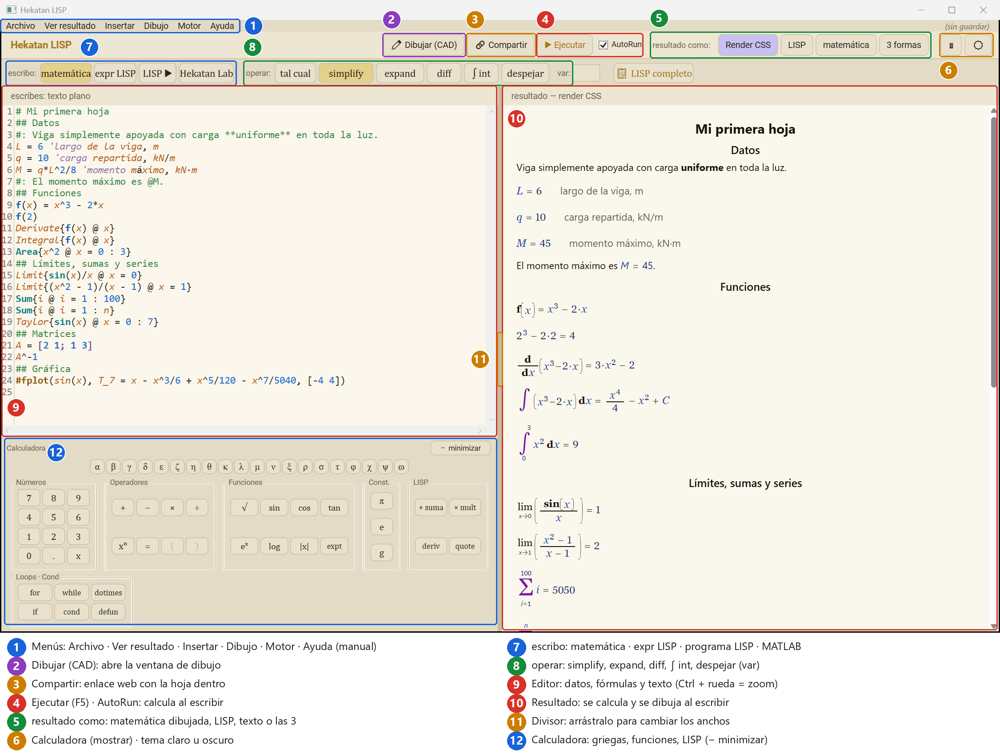
| N.º | Parte | Para qué |
|---|---|---|
| 1 | Menús | Archivo: abrir, guardar (Ctrl+S), exportar a PDF, guardar dibujo, compartir. Dibujo: ventanas de dibujo 2D y 3D (§10). Ayuda: este manual. |
| 2 | ✏ Dibujar (CAD) | Pone un bloque de dibujo en la hoja y abre la ventana de dibujo. |
| 3 | 🔗 Compartir | Crea un enlace de la web con tu hoja dentro (§13). |
| 4 | ▶ Ejecutar · AutoRun | Calcula. Con AutoRun encendido calcula solo, mientras escribes. F5 = Ejecutar. |
| 5 | resultado como | Render CSS (matemática dibujada) · LISP · matemática (texto) · 3 formas (las tres juntas, para aprender). |
| 6 | 🖩 · ☀/☾ | Muestra la calculadora · cambia el tema claro u oscuro. |
| 7 | escribo | Cómo escribes a la izquierda: matemática (lo normal), expr LISP, LISP ▶ (programa), Hekatan Lab (MATLAB). |
| 8 | operar | Aplica a toda la hoja: simplify, expand, diff, ∫ int, despejar. En var va la variable. |
| 9 · 10 | Editor · Resultado | Lo que escribes y lo que sale. Ctrl + rueda = zoom en los dos. |
| 11 | Divisor | Arrástralo para dar más ancho al editor o al resultado. |
| 12 | Calculadora | Letras griegas, funciones, constantes y bloques LISP. «− minimizar» la esconde. |
La regla madre: una línea que empieza con # es texto; sin nada es matemática;
con ; es LISP. Lo que va después de un apóstrofo ' es la descripción de esa línea (qué es, en qué unidades).
# Mi primera hoja
## Datos
#: Viga simplemente apoyada con carga **uniforme** en toda la luz.
L = 6 'largo de la viga, m
q = 10 'carga repartida, kN/m
M = q*L^2/8 'momento máximo, kN·m
#: El momento máximo es @M.
## Funciones
f(x) = x^3 - 2*x
f(2)
Derivate{f(x) @ x}
Integral{f(x) @ x}
Area{x^2 @ x = 0 : 3}
## Límites, sumas y series
Limit{sin(x)/x @ x = 0}
Limit{(x^2 - 1)/(x - 1) @ x = 1}
Sum{i @ i = 1 : 100}
Sum{i @ i = 1 : n}
Taylor{sin(x) @ x = 0 : 7}
## Matrices
A = [2 1; 1 3]
A^-1
## Gráfica
#fplot(sin(x), T_7 = x - x^3/6 + x^5/120 - x^7/5040, [-4 4])
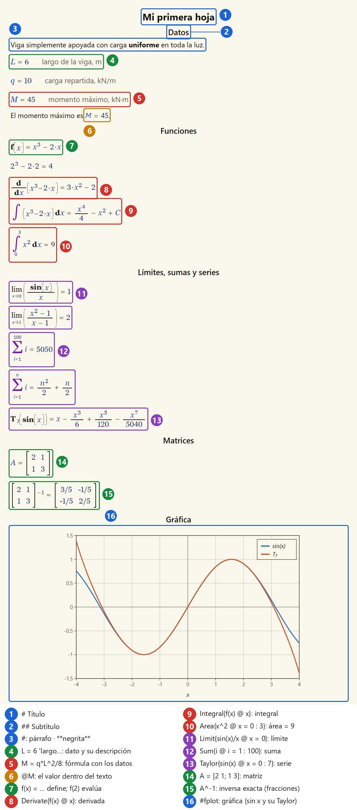
| Escribes | Sale |
|---|---|
# Título · ## Subtítulo · ### … | encabezados (marcas 1 y 2) |
#: texto | párrafo (marca 3) |
#| · #> · #< | centrado · derecha · izquierda |
**negrita** · *cursiva* | negrita · cursiva |
x = 6 'descripción | el dato y, a su lado, la descripción (marca 4) |
@var · @{expr} | pone «var = valor» o solo el valor dentro del texto (marca 6) |
x_0 · theta · N_1(x) | subíndice x₀ · letra griega θ · N₁(x) |
Se escriben Nombre{ f @ variable = a : b }; los campos que sobran se omiten.
| Operación | Qué hace |
|---|---|
Simplify{f} · Expand{f} · Factor{f} | junta términos · distribuye · factoriza |
Derivate{f @ x} · Partial{f @ x} | derivada total · parcial ∂f/∂x |
Integral{f @ x} · Area{f @ x = a : b} | integral indefinida · definida |
Slope{f @ x = a} | pendiente: la derivada evaluada en a |
Limit{f @ x = a} | límite de f cuando x → a |
Sum{f @ i = a : b} · Product{…} | Σ · Π (b puede ser una letra: da la fórmula cerrada) |
Taylor{f @ x = a : n} | serie de Taylor de f alrededor de a, hasta el grado n |
Root{f @ x} · Find{f @ x = a : b} | despeja f = 0 · busca la raíz en [a, b] |
f(x) = … y luego f(3) o f(a) | define y aplica la función (numérico o simbólico) |
A = [1 2; 3 4] · A' · A^-1 · A*B | matrices como en MATLAB; la inversa sale en fracciones exactas |
El motor da el resultado exacto: fracciones, π y logaritmos quedan como símbolos, no como decimales. Estos resultados se comprobaron en la aplicación (versión 1.29):
| Escribes | Sale | Por qué |
|---|---|---|
Limit{sin(x)/x @ x = 0} | 1 | cerca de 0, sin x ≈ x |
Limit{(x^2 - 1)/(x - 1) @ x = 1} | 2 | x² − 1 = (x − 1)(x + 1): se simplifica y queda x + 1 |
Sum{i @ i = 1 : 100} | 5050 | la suma de Gauss |
Sum{i @ i = 1 : n} | n²/2 + n/2 | la misma, con n como letra: la fórmula n(n + 1)/2 |
Sum{i^2 @ i = 1 : n} | n³/3 + n²/2 + n/6 | suma de cuadrados |
Taylor{sin(x) @ x = 0 : 7} | x − x³/6 + x⁵/120 − x⁷/5040 | solo potencias impares: sin es impar |
Area{x^2 @ x = 0 : 3} | 9 | x³/3 de 0 a 3 = 27/3 |
Area{sin(x) @ x = 0 : pi} | 2 | −cos x de 0 a π = 1 + 1 |
Area{1/x @ x = 1 : 2} | ln(2) | la primitiva de 1/x es ln x |
La gráfica de la primera hoja (marca 16 de la figura de §3) dibuja sin x junto a su serie T₇: coinciden cerca de 0 y se separan hacia ±4. Así se ve cuánto vale una serie truncada.
Con una línea #numerico la hoja es un programa con estado: bucles, matrices grandes,
ensamblaje y solución. Cada línea sale como nombre = fórmula = valor.
#numerico n = 4 K = zeros(n, n) for i = 1:n K(i, i) = 2 end u = lsolve(K, ones(n, 1))
| Escribes | Hace |
|---|---|
for · while · if … elseif … else · end | bloques (también #for … #loop, #if … #end if de Calcpad) |
A(i, j) = x · M(:, j) · a:b:c | índices y rangos |
lsolve(A, b) · clsolve · inv · det | sistemas de ecuaciones |
integral(f, a, b) · integral2(…) · spline(…) | integrales numéricas e interpolación |
#hide / #show · #noc / #equ / #val | qué se muestra de cada línea |
#map(f(x, y), [xa xb], [ya yb]) · #surf(…) · #malla(…) | mapa de color · superficie 3D que se gira · malla del modelo |
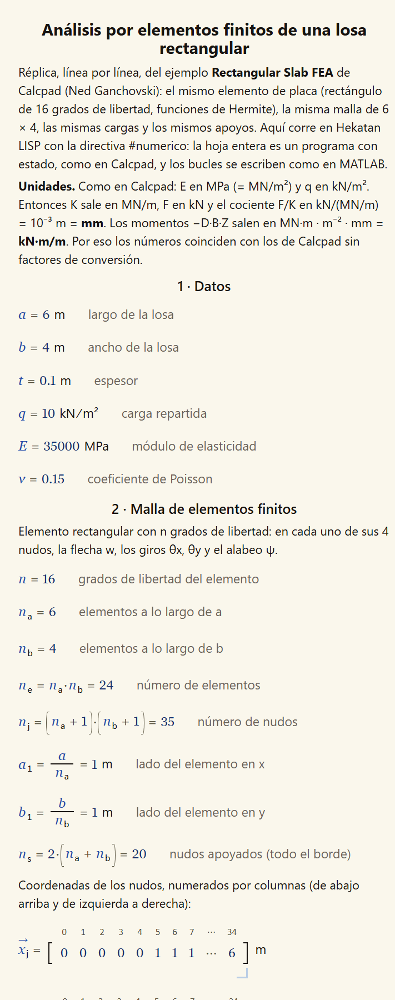
Una animación son varios cuadros que el motor calcula de antemano, uno por cada valor de un parámetro.
La página enseña uno y los demás esperan. Cada animación trae ▶/⏸, una barra de cuadro, el rótulo
(n = 3 (3/8)), un subtítulo y el botón 🔊 que lee el texto en voz alta (voz en español del sistema).
| Escribes | Hace |
|---|---|
#anim fplot(u = x^n, [0 1]), n = 1:8 | una gráfica por valor de n (paso opcional: n = 1:2:15) |
#anim surf(A*sin(pi*x)*sin(pi*y), [0 1], [0 1]), A = 0.25:0.25:1 | superficie que se gira con el ratón; la escala z es común, así se ve crecer la amplitud |
#anim surf(N_{k}, [0 1], [0 1]), k = 1:16 | {k} arma el nombre: N_1 … N_16, una función por cuadro |
#anim map(…), k = 1:3 | mapa de color animado |
#anim(n = 2:2:16) … #finanim | bloque: todo lo de dentro (dibujos, mallas, fórmulas, texto, bucles) se calcula una vez por valor |
#voz: texto | narración. Pegada a una animación: una línea por cuadro, en orden (una sola vale para todos). Suelta: un párrafo con su 🔊. Dentro valen {k} y @{var} |
#anim surf(N_{k}, [0 1], [0 1]), k = 1:16
#voz: Función 1: flecha unitaria en el nudo 1. Vale 1 allí y 0 en los otros tres nudos.
#voz: Función 2: giro unitario theta x en el nudo 1.
…
Ejemplo 82 (funciones de forma del BFS y refinamiento h de la losa): el motor deduce las cúbicas de Hermite, arma las 16 funciones de forma de la placa y las anima con 16 voces; después refina la malla de 2 × 2 a 16 × 16 elementos y compara la flecha del centro con la solución de Navier en cada cuadro.
Al imprimir o exportar a PDF queda el cuadro 1 con su texto. El mismo código funciona en el escritorio y en la web.
Un bloque #dibujo(…) … #fin dibuja con las variables de la hoja. Si cambias un dato, cambian el cálculo y el dibujo.
B = 8 'ancho de la placa
H = 5 'alto
r = sqrt(3/pi) 'radio del agujero de área 3
#dibujo("Placa con agujero", ud = m, cotas = m, ancho = 150, alto = 110)
# linea(0, 0, B, 0, "gruesa")
# circulo(B/2, H/2, r, "azul denso")
# arco(B - 1.5, H - 1.5, 1.5, 0, 90, "gruesa")
# cota(0, 0, B, 0, -0.8, "B = 8.00")
#fin
Piezas: linea, arco (grados), circulo, poligono, curva(a, b, f(x)), texto, cota, carga.
Estilos: gruesa, fina, eje, colores (rojo, azul…), relleno, tenue.
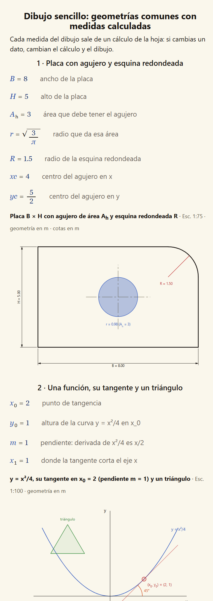
En LISP el código es la lista de datos. Una línea del dibujo es la lista de AutoCAD
((0 . "LINE") (10 0 0) (11 3 4)): se arma con el cálculo, se pone con entmake y se lee de vuelta con
ssget / entget para seguir calculando. Es AutoLISP real: el mismo bloque corre en AutoCAD.
#autolisp("Título", ancho = 160, alto = 110, exporta = n)
(entmake (list '(0 . "LINE") '(10 0 0) (cons 11 (polar '(0 0) (/ pi 6) 5))))
(setq n (sslength (ssget "_X" '((0 . "LINE")))))
#fin
L = 6, f(x) = …) se usa dentro del bloque.exporta = n A devuelve esos valores a la hoja (salen como n = …).linea, circulo, arco, poli, rect, texto, formula, cota, achurado, curva, ejes; medir: longitud, area, vertices.poli3, cara3, flecha3. Con z el dibujo se gira con el ratón (Planta · Frente · Lateral · 3D).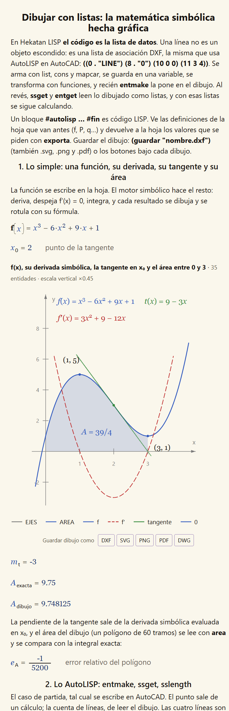
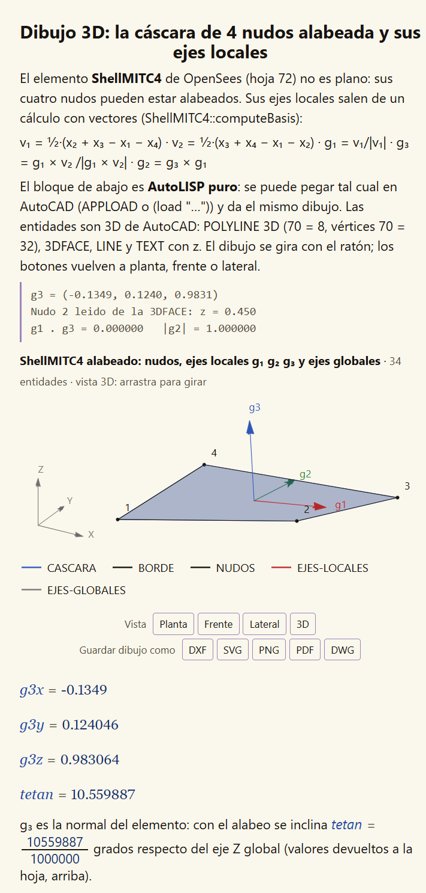
Además de escribir el dibujo, se puede dibujar a mano, con las órdenes y las teclas de AutoCAD.
Lo dibujado vuelve a la hoja como listas DXF (entmake) y la hoja lo mide.
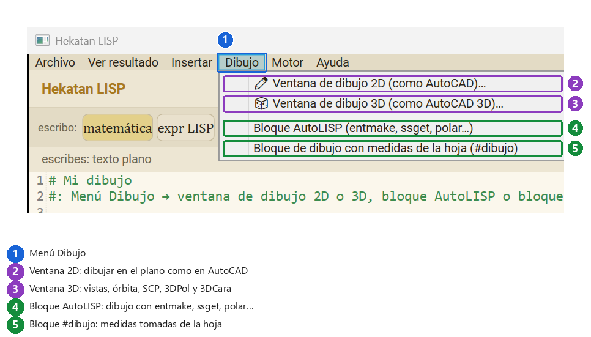
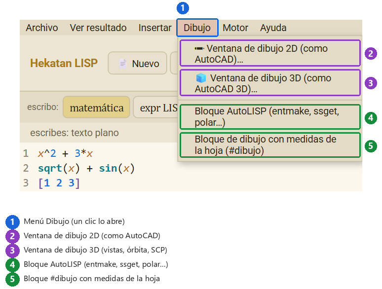
Dibujo → Ventana de dibujo 2D (o el botón ✏ Dibujar (CAD)) escribe en la hoja un bloque vacío
#dibujar(dibujo1, ud = m, cuadricula = 0.1) … #fin y abre la ventana. Las otras opciones ponen
un bloque AutoLISP (§9) o un bloque #dibujo (§8) para empezar.
Si la hoja ya tiene un #dibujar, su botón ✏ Dibujar / Editar abre la ventana con lo que hay.
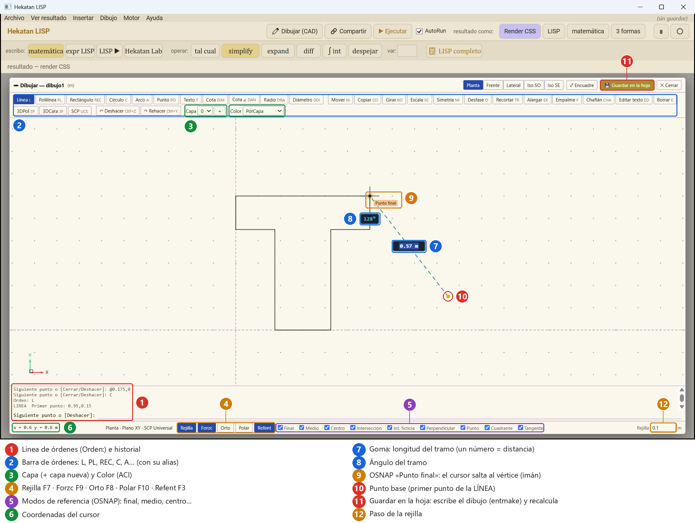
PL por la línea de órdenes y una LÍNEA a medio hacer: el cursor se enganchó en la esquina de la T (9).| N.º | Parte | Qué hace |
|---|---|---|
| 1 | Línea de órdenes | Escribe la orden y pulsa Intro o Espacio. Arriba queda el historial y lo que pide ahora (Primer punto, Siguiente punto…). |
| 2 | Barra de órdenes | Los mismos botones, cada uno con su alias (L, PL, REC…). |
| 3 | Capa y color | La capa actual (+ crea otra) y el color ACI (PorCapa = el de la capa). |
| 4 | Ayudas | Rejilla F7 · Forzcursor F9 (salta a la rejilla) · Orto F8 · Polar F10 · Refent F3. |
| 5 | Modos OSNAP | A qué se engancha el cursor: final, medio, centro, intersección, intersección ficticia, perpendicular, punto, cuadrante, tangente. |
| 6 · 12 | Estado | x, y del cursor · paso de la rejilla. |
| 7 · 8 | Goma | Mientras dibujas: longitud del tramo en el medio y su ángulo bajo el cursor. |
| 9 | OSNAP | El marcador (un cuadrado = punto final) y su nombre. La mira salta a ese punto. |
| 10 | Punto base | El primer punto de la orden (cuadrito naranja). |
| 11 | 💾 Guardar en la hoja | Escribe el dibujo entre #dibujar y #fin y recalcula la hoja. |
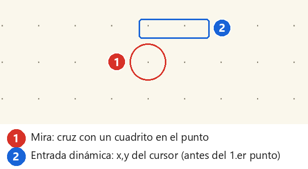
| Dibujar | L línea · PL polilínea (C cierra) · REC rectángulo · C círculo · A arco · PO punto · T texto · DIM cota · DAL · DAN · DRA · DDI |
| Modificar | M mover · CO copiar · RO girar · SC escala · MI simetría · O desfase · TR recortar · EX alargar · F empalme · CHA chaflán · ED editar texto · E borrar · U deshacer · REDO |
| Ajustes | LA capa · COL color · REJ rejilla · Z zoom · POLAR incremento polar |
| Coordenadas | x,y absolutas · @dx,dy relativas · @d<ángulo polares · un número solo = distancia en la dirección del cursor |
| Teclas | Intro/Espacio/clic derecho = Intro (vacío repite la última orden) · Esc cancela · doble clic en un texto o una cota: editarlo |
| Ratón | rueda = zoom · arrastrar con la rueda = encuadre · doble clic con la rueda = ver todo |
Así se dibujó la T de la figura (se teclea tal cual, sin tocar el ratón):
PL 0.175,0 @0.25,0 @0,0.45 @0.175,0 @0,0.15 @-0.6,0 @0,-0.15 @0.175,0 C
Los valores se leyeron de AutoCAD 2027 (variables del sistema) y la ventana los usa igual:
#dibujar(seccion, ancho = 100, alto = 95, ud = m, cuadricula = 0.025)
#fin
#autolisp("Lo dibujado, leído", exporta = A)
(setq A (area (ssname (ssget "_X" '((0 . "LWPOLYLINE"))) 0)))
#fin
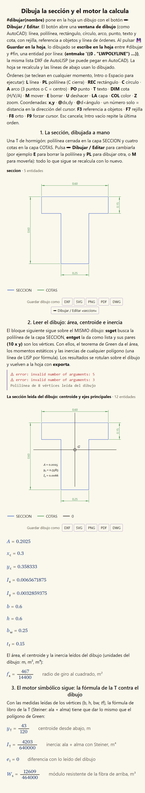
Dibujo → Ventana de dibujo 3D abre la misma ventana en vista isométrica. Con un bloque que ya tiene z (ejemplo 84, un pórtico con losa) se ve así:
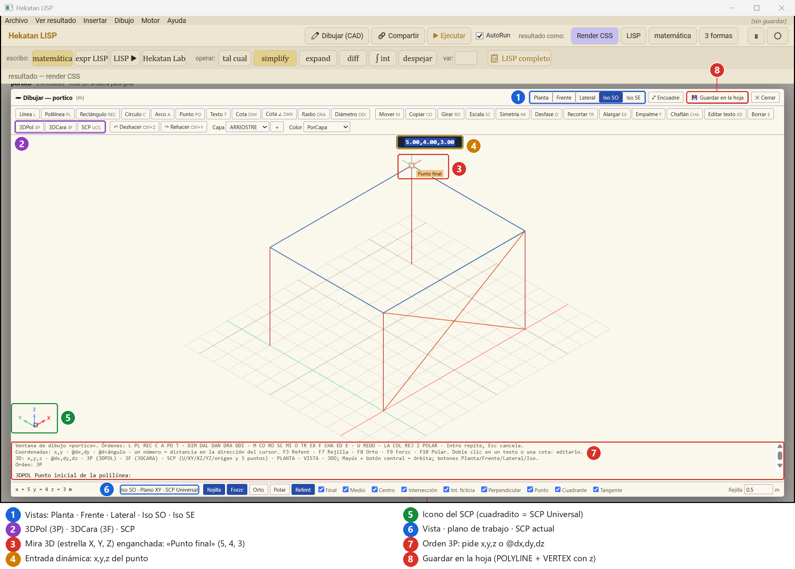
3P en marcha y el cursor enganchado en la esquina de la losa (5, 4, 3).| N.º | Parte | Qué hace |
|---|---|---|
| 1 | Vistas | Planta (la 2D) · Frente · Lateral (ponen su SCP, como AutoCAD) · Iso SO · Iso SE. Órbita: Mayús + botón central arrastrando, o la orden 3DO. |
| 2 | Órdenes 3D | 3P polilínea 3D · 3F cara 3D · SCP sistema de coordenadas. |
| 3 | Mira 3D | La estrella: los tres ejes del SCP (X rojo, Y verde, Z azul). Aquí, enganchada a un «Punto final». |
| 4 | Entrada dinámica | x,y,z del punto bajo el cursor. |
| 5 | Icono del SCP | Hacia dónde apuntan X, Y, Z. El cuadradito indica el SCP Universal. |
| 6 | Barra de vista | «Iso SO · Plano XY · SCP Universal»: vista, plano de trabajo y SCP. |
| 7 | Línea de órdenes | Lo que pide la orden (aquí: el punto inicial de la 3DPOL). |
| 8 | 💾 Guardar en la hoja | Escribe POLYLINE + VERTEX (con z) + SEQEND, 3DFACE… y recalcula. |
| Coordenadas | x,y,z · @dx,dy,dz. Con dos números, la z es la del plano del SCP. Un número solo = distancia en la dirección del cursor en el espacio. La caja de la goma da la longitud 3D del tramo. |
3P (3DPOL) | polilínea 3D; C la cierra. |
3F (3DCARA) | 4 puntos; Intro en el 4.º = cara de 3 lados. Sigue con el 3.º y el 4.º de la cara siguiente. I antes de un punto = arista invisible. |
SCP | U universal · XY · XZ · YZ · un punto = origen nuevo; y, si se quiere, un punto en el eje X y otro en el plano XY = SCP de 3 puntos · A anterior. |
| Vista | PLANTA · VISTA · 3DO (órbita). |
| OSNAP 3D | final, medio, centro, intersección e intersección ficticia (APPINT: donde dos líneas se cruzan en la vista aunque en el espacio no se toquen) enganchan los puntos 3D proyectados. |
LA COLUMNAS · L 0,0,0 0,0,3 … LA VIGAS · 3P 0,0,3 5,0,3 5,4,3 0,4,3 C LA LOSA · 3F 0,0,3 5,0,3 5,4,3 0,4,3 Intro LA ARRIOSTRE · L 0,0,0 5,0,3
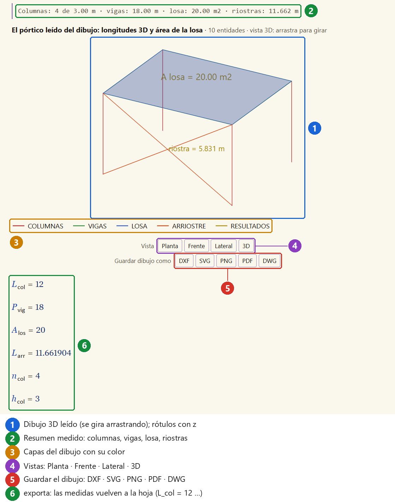
Debajo de cada dibujo: DXF · SVG · PNG · PDF · DWG (marca 5 de la figura anterior). También Archivo → Guardar dibujo como…
(eliges el tipo al guardar) o dentro del código: (guardar "planta.dwg") (el tipo lo da la extensión).
| Tipo | Para qué |
|---|---|
| DXF | abrir en AutoCAD y en cualquier CAD (R12; con POLYLINE 3D y 3DFACE si hay z). |
| DWG | el archivo nativo de AutoCAD (2018). Lo escribe acadrust, el mismo escritor en la web y en el escritorio; se comprobó abriéndolo en AutoCAD 2027. En el escritorio necesita Node instalado (si no está, avisa y ofrece DXF). |
| SVG · PNG · PDF | informes, presentaciones, imprimir. |
La hoja completa se exporta con Archivo → Exportar a PDF.
La web es la misma aplicación, sin instalar: giorgioburbanelli89.github.io/hekatan-lisp.
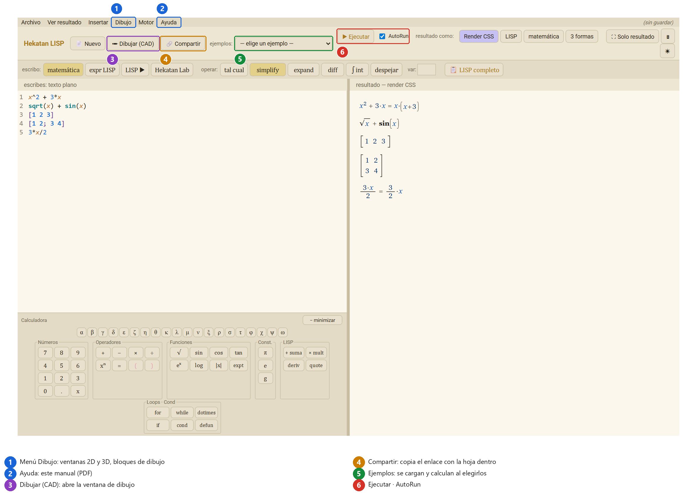
El botón 🔗 Compartir (o Archivo → Compartir enlace web…) crea un enlace de Hekatan LISP web que lleva la hoja dentro (comprimida en el propio enlace). Lo copia al portapapeles y lo abre en tu navegador. Quien lo reciba ve la hoja calculada, sin instalar nada, y puede editarla.
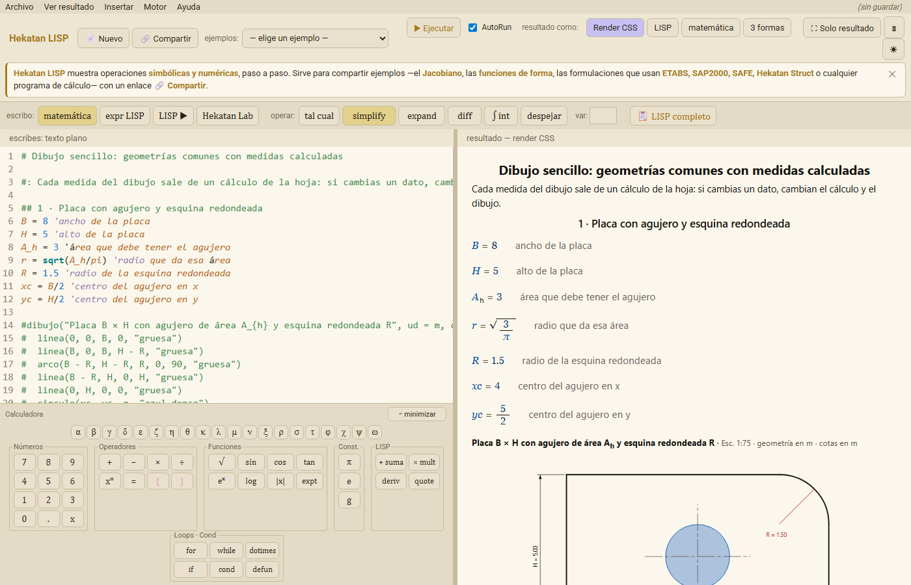
El enlace no pasa por ningún servidor: la hoja va escrita en el enlace. Una hoja muy larga da un enlace largo.
Menú Archivo → Ejemplos (en la web también la lista «ejemplos»). Algunos para empezar:
| N.º | Tema |
|---|---|
| 01 – 03 · 06 | derivadas, integrales, simplificar y expandir · límites, series y sumatorias |
| 09 | formato de texto |
| 13 – 32 | funciones de forma, Jacobiano y rigidez de barra, paso a paso |
| 33 – 40 | álgebra lineal y formas de invertir una matriz |
| 47 · 82 | animación (fplot) · funciones de forma del BFS y refinamiento h, animados con voz |
| 55 – 63 | unidades y cuadratura de Gauss |
| 71 · 77 | losa y losa plana por elementos finitos (como Calcpad) |
| 72 | elemento ShellMITC4 de OpenSees |
| 73 – 78 | losas con malla BFS (apoyada, empotrada, voladizo, convergencia frente a Navier) |
| 70 · 79 · 80 | dibujo técnico, AutoLISP con matemática simbólica, 3D |
| 81 · 84 | ventana de dibujo: sección T en 2D · pórtico con losa en 3D |
| 83 | mesa de torsión: losa DKQ sobre vigas y columnas (como ETABS) |
| Hoja | |
|---|---|
| F5 | Ejecutar |
| Ctrl+S | Guardar |
| Ctrl + rueda | Zoom del editor o del resultado |
| Arrastrar el divisor | Cambiar el ancho del editor y del resultado |
| Ventana de dibujo | |
| Intro · Espacio · clic derecho | Intro (vacío: repite la última orden) |
| Esc | Cancela la orden |
| F3 · F7 · F8 · F9 · F10 | Refent (OSNAP) · Rejilla · Orto · Forzcursor · Polar |
| Ctrl+Z · Ctrl+Y | Deshacer · Rehacer |
| Rueda · arrastrar con la rueda | Zoom · encuadre (doble clic con la rueda: ver todo) |
| Mayús + botón central | Órbita 3D (como 3DO) |
Hekatan Engineers · Hekatan LISP es software libre (MIT). Hereda la idea de hoja viva de Calcpad (Nedelcho Ganchovski).